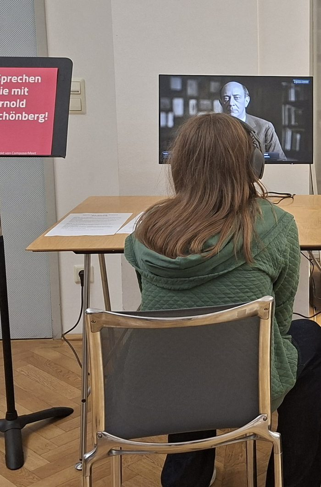

Schönberg-Installation
Arnold Schönberg Center
Die Schönberg-Installation von ComposerMeet: Im Haus kamen die Besucher*innen mit dem KI-Avatar von Arnold Schönberg ins Gespräch. Eröffnet wurde sie in der Langen Nacht der Museen.
Entwickelt gemeinsam mit dem Arnold Schönberg Center, auf Grundlage seines Archivs mit rund 200.000 Seiten Briefen und Schriften.